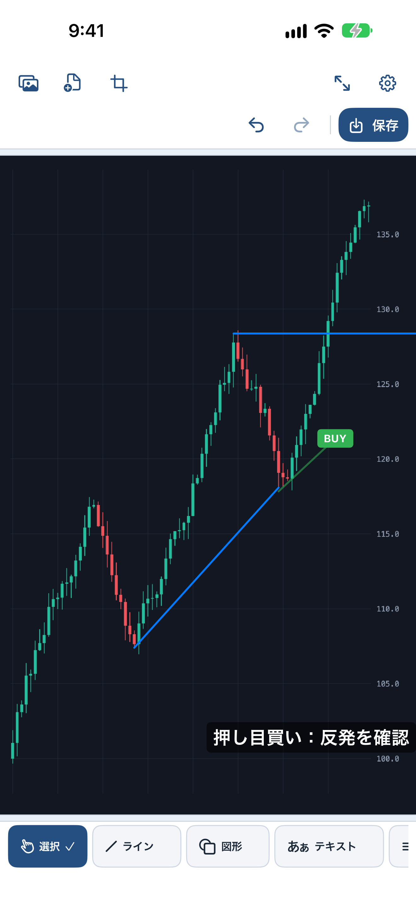
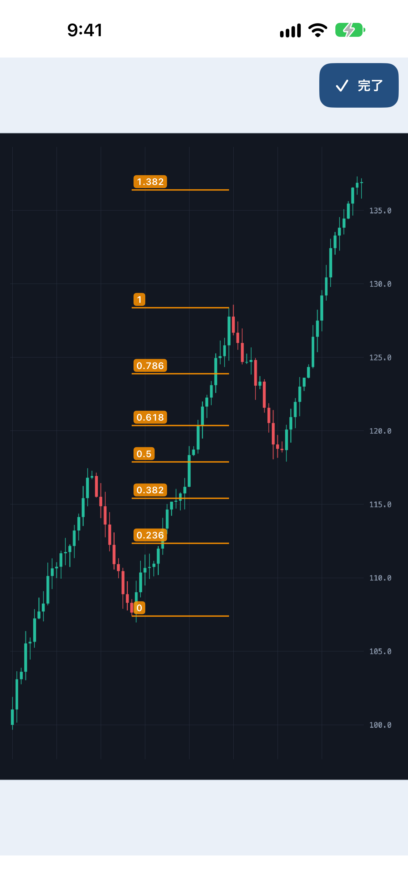

iPhoneアプリ · 公開準備中
HACLA TradeChart Editor
チャートに、
考えた跡を。
チャートのスクリーンショットに線や文字を書き込み、振り返りに使える画像として写真に残せるiPhoneアプリです。
対応環境・入手方法
主な機能

- ラインと図形で着目点を示す
- ライン、図形、フィボナッチを配置できます。細かい位置は拡大鏡で確認でき、集中編集では画像を広く表示できます。
- 文字と番号で考えを残す
- テキストや定型文、BUY・SELL・SL・TPの注釈、カウントの番号を置けます。
- 図を整えて写真に保存する
- 標準設定や個別の色・太さを調整でき、取り消し、やり直し、コピー、ペーストが使えます。画像の切り抜きや白紙からの作成にも対応します。
対応環境・入手方法
- 対応端末
- iPhone
- 提供条件
- 無料。広告、アプリ内課金、サブスクリプションはありません。
- 入手先
- App Storeで公開準備中です。
- シリーズ
- HACLA TradeChart Editor for Windowsは同じシリーズの製品です。それぞれ単独で使えます。
売買機能、相場データの配信、投資助言はありません。編集中の内容はアプリを終了すると残らないため、必要な画像は写真に保存してください。